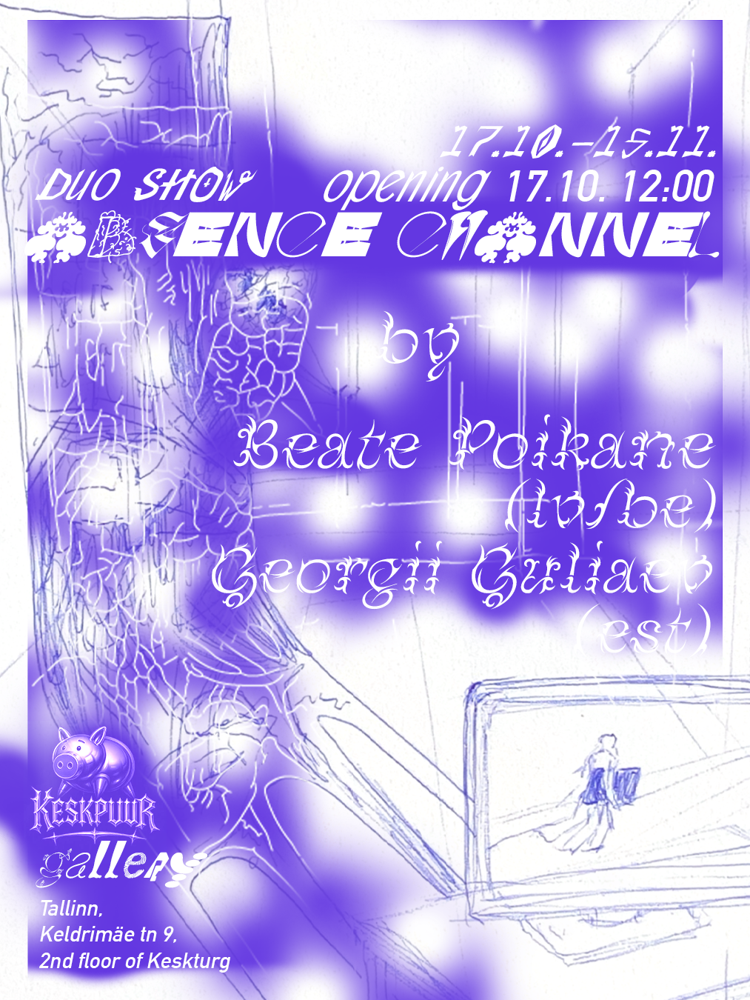

Absence Channel
Beate Poikāne, Georgii Guliaev

Absence Channel is a duo exhibition by Latvian artist Beate Poikāne and journalist Georgii Guliaev exploring ideological fragmentation, and clusters of disinformation in the Baltics. Starting from propaganda strategies of removal, replacement and staging (of words, removal and replacement of speech or documentary footage to be replaced by staged content).
They are curious to explore these methods in our own work through a series of reversals: forms of micro activism that become the basis for a DIY fiction film and installation.
For the film we made a selection of substituted words found in pro-Russian propaganda media, They selected specific words and created a fragmented language map, stretching them further into fiction. Such substitutions as ‘bird’ for ‘drone’ and ‘clapping’ for ‘explosion’ in the language of propaganda media become nodes from which a free-association-like narrative is eventually formed. iMoving from geopolitical tensions into the intimate space of personal relations, the work asks what happens when people no longer share the same informational realities.
As a duo, They explore the perspectives of art and journalism as ways of reflecting on social processes in the Baltic region, as well as on the interpersonal conversations and encounters that become part of their work. They are interested in how approaches from journalism can be explored within an artistic context.
Visit
2nd floor of the Meat and Deli Hall
Keskturg, Keldrimäe 9
10113 Tallinn, Estonia